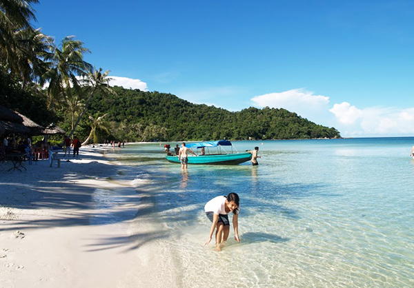

Biển Nha Trang
Bãi biển Nha Trang
Những ai đã từng có dịp đặt chân đến phố biển Nha Trang đắm mình trong làn nước biển xanh ngắt, nằm dài trên bờ cát phẳng mịn ngắm cảnh mây trời hay đón những khoảnh khắc thiên nhiên đẹp diệu kỳ thì hẳn sẽ không thể nào quên được mảnh đất xinh đẹp này
BÃI BIỂN NHA TRANG LUÔN LÀ ĐIỂM ĐẾN HẤP DẪN
Vịnh Nha Trang rộng chừng 500km2 khá kín gió, không có sóng lớn. Cửa sông Cái đổ ra giữa hai bãi biển hình trăng khuyết, cát mịn mát trải dài hàng 6, 7 cây số.
Dưới ánh nắng mặt trời nhiệt đới, màu xanh của những triền núi nhấp nhô trên bờ, của các hòn đảo hoà cùng mầu biển biếc, như tôn thêm vẻ quyến rũ của những dải cát vàng dạt dào sóng trắng.

Bãi biển Nha trang trải dài dọc theo đường Trần Phú

Biển Nha Trang luôn rất sạch và đẹp.
Qua bao năm tháng, phố biển Nha Trang ngày càng thay da đổi thịt, hòa cùng nhịp sống trẻ trung, hiện đại và năng động, đổi mới và phát triển từng ngày. Thế nhưng, vẻ đẹp của biển Nha Trang vẫn luôn khiến bao người mê mẩn và say đắm.